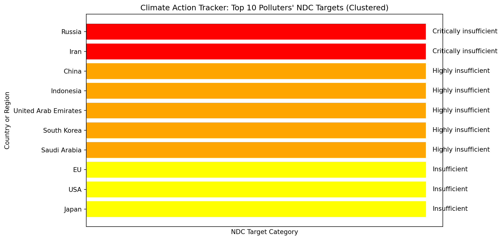
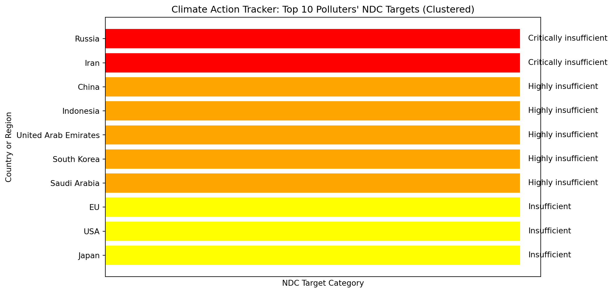
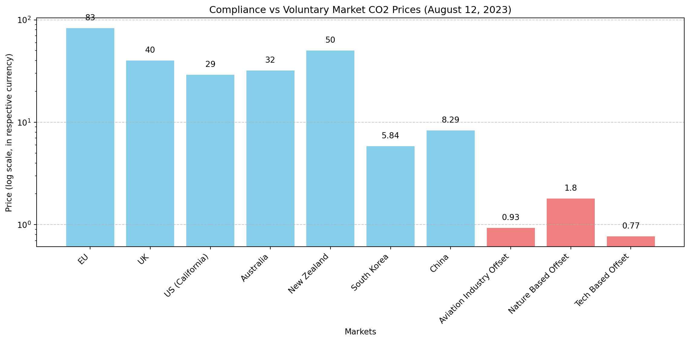
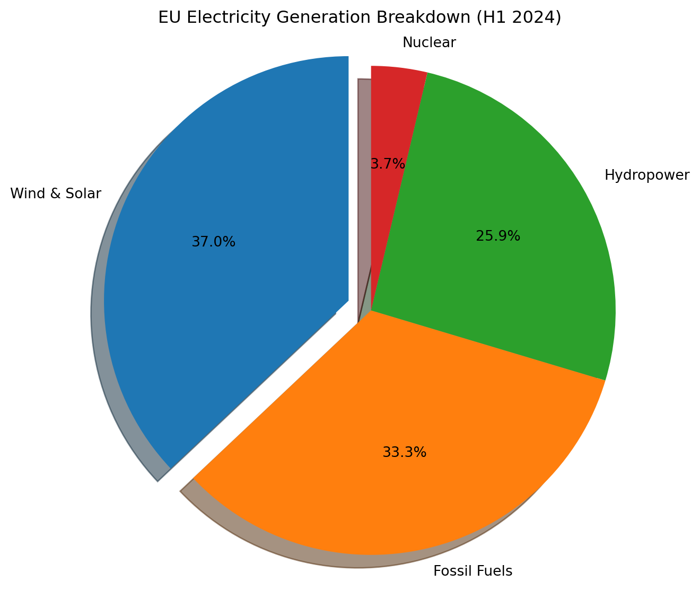
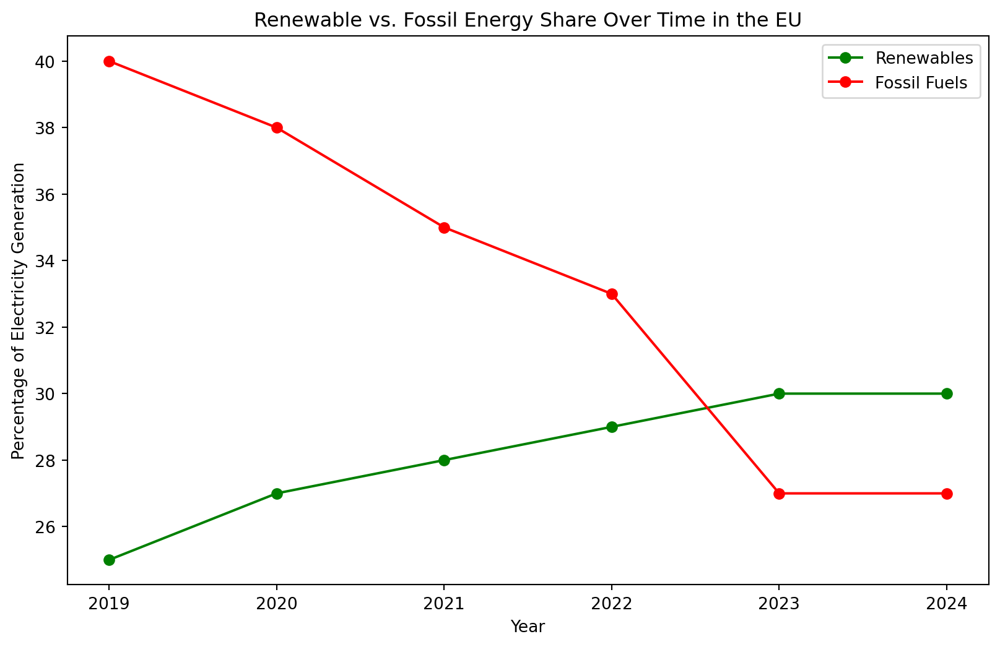
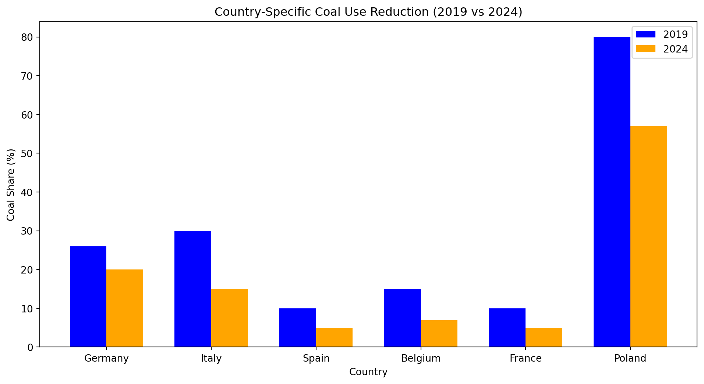

ndc_chart()
“Nachhaltigkeit” - sustainability in German - was likely the first use of the concept of preserving natural resources, conceived by a tax accountant Hannß Carl von Carlowitz in 1713 in his seminal book on forestry - Sylvicultura oeconomica -, referring to the goal of achieving prudent forest management practices in his native Saxony in Southeastern Germany, which at the time was under severe deforestation pressure from mining, ship-building and agricultural production (Hannß Carl von Carlowitz, 1713; Gottschlich & Friedrich, 2014). This particular field of sustainability study is now known as sustainable yield of natural capital. The principal of the natural resource being managed, such as in fishing and forestry, shouldn’t be over-harvested in order to maintain ecosystem services - a contemporary term from the theory of natural capital, referring to benefits humans receive from the stock of world’s natural resources (Peter Kareiva et al., 2011).
Defining sustainability perhaps more poetically, the American wildlife ecologist Aldo Leopold proposed the idea of land ethics in 1972 as “[a] thing is right when it tends to preserve the integrity, stability, and beauty of the biotic community. It is wrong when it tends otherwise” in his landmark work A Sand County Almanac (Leopold, 1972). In a similar vein, the 1987 United Nations’ Brundtland Report titled “Our Common Future” defined sustainable development as “Development that meets the needs of the present without compromising the ability of future generations to meet their own needs” (Anon, 1987). Given these varied ideas for over 300 years, I believe some percentage of people have been concerned with our planet’s natural environment and its preservation already for centuries. Yet, it is only in the last 100 and so years that human activities have begun to affect Earth’s systems on a previously unseen scale - termed Anthropocene -, necessitating a deeper understanding of human-nature interactions, such as in the case of climate change, which is rapidly changing the face of our living environments.
Studies of Earth’s climate go back for over 200 years, starting with Alexander von Humboldt,the founder of climatology, who revolutionized cartography by inventing the first isothermal maps in 1816; these maps showed areas with similar temperature, variations in altitude and seasons in different colors (Honton, 2022) now available as 3D computer models(Anon, 2023c). Already in 1896, the Nobel Prize winner Svante Arrhenius first calculated how an increase in CO2 levels could have a warming effect on our global climate (Anderson, Hawkins & Jones, 2016; Wulff, 2020). In 1938, Guy Stewart Callendar was the first scientist to demonstrate the warming of Earth’s land surface as well as linking the production of fossil fuels to increased CO2e and changing climate (Hawkins & Jones, 2013). Early scientists pioneered climate modeling by calculating the first climate interactions which precede today’s complex computer-based Earth System Models (ESMs) that integrate the various Earth systems and cycles run on supercomputers (Anderson, Hawkins & Jones, 2016).
Environmental activists have been calling attention to global warming for decades, yet the world has been slow to act (McKibben, 1989). While the scientific case for human-induced climate change was building, it took 120 years after Arrhenius’ calculations, until the Paris Climate Agreement in 2016, that countries came to an agreement on non-binding targets on keeping CO2 levels 1.5 °C below pre-industrial levels (defined as 1850–1900)(United Nations, 2016). Even though awareness of Earth’s warming climate was growing ever stronger, the CO2 emissions kept rising too. The hockey-stick growth of CO2 concentration since the industrial revolution is clear in the data from 1958 onward, following a steady annual increase, called the Keeling Curve (Keeling & Keeling, 2017). Written records of global temperature measurements are available starting from the 1880s, when temperatures began to be documented in ship logs (Brohan et al., 2012). Finally, although perhaps less accurately, temperature estimations from tree-trunks allow some comparisons with the climate as far back as 2000 years ago (Rubino et al., 2019).
The latest data from 2023 shows our current world population of 8 Billion people emitted 37.2 gigatonnes (i.e. billion metric tons) of CO2e per year, the highest emissions recorded in history (Statista, 2023). In order to limit global warming to 1.5 °C as agreed by the world nations in Paris, removal of 5-20 gigatons of CO2e per year would be needed according to reduction pathways calculated by the Intergovernmental Panel on Climate Change (IPCC) (Wade et al., 2023). Yet, most countries are missing the mark (Climate Analytics & NewClimate Institute, 2023; United Nations Environment Programme, 2023). The European Union’s Copernicus Climate Change Service (C3S) reports 1.5 °C global warming has already been breached in 2024 temperatures (Anon, 2024b; Anon, 2024a). Given the current pace of climate change action, the G7 countries (Canada, France, Germany, Italy, Japan, United Kingdom, United States) are heading for 2.7 °C of warming by 2050 (CDP, 2022).
Earth’s physical systems are very sensitive to small changes in temperature, which was not understood until the 1970s(McKibben, 2006). A comprehensive review of evidence from paleoclimate records until current time, including ocean, atmosphere, and land surface of points towards substantial climate change if high levels of greenhouse gas emissions continue, termed by the authors as climate sensitivity (Sherwood et al., 2020). Global warming may lead to the slowing down and complete stop of the Atlantic meridional overturning circulation (AMOC) which helps maintain climate stability (Ditlevsen & Ditlevsen, 2023).
The most complex computer models which attempt to capture ever more interactions happening in the physical realm are called digital twins. The EU is developing a digital twin of Earth to help sustainability prediction and planning, integrating Earth’s various systems such as climate, hydrology, ecology, etc, into a single model Anon (2023a). We can use all the data being recorded to provide a digital twin of the planet, nature, ecosystems and human actions to help us change our behavior and optimize for planetary wellbeing.
Earth’s biosphere is made up of 846 terrestrial ecoregions, which are distributed across 14 major biomes and 8 biogeographical realms (Dinerstein et al., 2017).
Sustainability can be measured using a variety of ecological indicators.
Ecological indicators for Earth - may I coin the name “ecomarkers” - are like biomarkers in human health. Many technological advances help scientist better understand nature. Cutting edge research uses AI-based voice recognition for listening to nature, assessing biodiversity based on species’ sounds in the forest. Millions of detections of different species with machine learning passive acoustic AI models, can also assess species’ response to climate change (AI for Good, 2023; Guerrero et al., 2023).
Environmental DNA (eDNA) helps scientists measure species abundance without direct observation through detection of DNA on genetic materials such as skin cells (Peter Andrey Smitharchive page, 2024). Cellular DNA can be isolated from various sediment types (Ogram, Sayler & Barkay, 1987). Beyond scientific applications, eDNa is being used to generate biodiversity credits by environmental asset rating companies such as BeZero (Ojoatre & Atkinson, 2023).
AI is being used to map icebergs and measure the change in size (European Space Agency, 2023).
While technology improves and measurements become more accurate, CO2e emissions are not yet completely accounted for. (Crippa et al., 2020) reports latest figures CO2e from the EU’s Emissions Database for Global Atmospheric Research (EDGAR). The EU Copernicus satellite system reveals new greenhouse emissions previously undetected (Daniel Värjö, 2022). Copernicus Climate Change Service (C3S) provides “[n]ear-real time updates of key global climate variables“ **(The Copernicus Climate Change Service, 2024).
Matthew Gore, Alessio Sbraga & Joseph Malpas (2022) reports the International Maritime Organization (IMO) targets cutting CO2 equivalent emissions in shipping 50% by 2050 compared to 2008.
Verra (2023) Verra new Methodology Announcement Webinar
Emissions production is highly unequal. “The world’s top 1% of emitters produce over 1000 times more CO2 than the bottom 1%” IEA (2023a)
CO2e emissions by region (per year).
| Regional Average Per Capita Emissions (2020) | Highest Per Capita Emissions (2021) | Highest Total Emissions (2021) |
| North America 13.4 CO2e tonnes | Palau | China |
| Europe 7.5 CO2e tonnes | Qatar | United States |
| Global Average 4.1 CO2e tonnes | Kuwait | European Union |
| Africa and the Middle East 1.7 CO2e tonnes | Bahrain | India |
| Trinidad and Tobago | Russia | |
| New Caledonia | Japan | |
| United Arab Emirates | Iran | |
| Gibraltar | Germany | |
| Falkland Islands | South Korea | |
| Oman | Indonesia | |
| Saudi Arabia | Saudi Arabia | |
| Brunei Darussalam | Canada | |
| Canada | Brazil | |
| Australia | Turkey | |
| United States | South Africa |
Scoping
Scoping CO2e emissions into 4 main categories helps to organize calculating CO2e emissions and corresponding reduction targets by looking at direct and indirect emissions separately. The U.S. National Public Utilities Council (NPUC) decarbonization report provides a useful categorization of emission scopes applicable to companies which helps organizing emission reduction schemes (National Public Utilities Council, 2022) based on the Greenhouse Gas Protocol defined in the 1990s (GHG Protocol, n.d.). For example, for consumers in Australian states and territories in 2018, 83% of the GHG emissions are Scope 3, meaning indirect emissions in the value chain (Goodwin et al., 2023). A newer concept is Scope 4 emissions also known as avoided emissions, proposed by the World Resources Institute (WRI) in 2013 (Plan A, n.d.).
| Emission Scope | Emission Source |
| Scope 1 | Direct emissions |
| Scope 2 | Indirect electricity emissions |
| Scope 3 | Value chain emissions |
| Scope 4 | Avoided emissions |
One’s scope 3 emissions are someone else’s scope 1 emissions.
Countries have agreed up CO2e Reduction Targets known as Country-Level Nationally Determined Contributions (NDCs)
While most countries have not reached their Nationally Determined Contributions, the Climate Action Tracker data portal allows to compare countries (Climate Analytics & NewClimate Institute, 2023).
| Country or Region | NDC target |
| China | Highly insufficient |
| Indonesia | Highly insufficient |
| Russia | Critically insufficient |
| EU | Insufficient |
| USA | Insufficient |
| United Arab Emirates | Highly insufficient |
| Japan | Insufficient |
| South Korea | Highly insufficient |
| Iran | Critically insufficient |
| Saudi Arabia | Highly insufficient |
ndc_chart()
(Fransen et al., 2022) notes that the majority of Nationally Determined Contributions (NDCs) are dependent on financial assistance from the international community.
CO2e assigning a monetary value to carbon emissions.
Trading CO2e emissions can be divided into 2 categories - Compliance Carbon Markets (CCM) and Voluntary Carbon Markets (VCM).
The legislative baseline for Compliance Carbon Markets is so low, people want to retire more CO2e, which they can do through Voluntary Carbon Markets.
For the individual person, there’s no direct access to CO2 markets. However, brokers do buy large amounts of carbon credits to resell in smaller quantities to retail investors.
“Carbon pricing is not there to punish people,” says Lion Hirth Lion Hirth (n.d.). “It’s there to remind us, when we take travel, heating, consumption decisions that the true cost of fossil fuels comprises not only mining and processing, but also the damage done by the CO2 they release.”
Long term cost of insufficient climate action is more than short-term gains from delaying efforts to reduce carbon emissions.
The total size of carbon markets reached 949 billion USD in 2023, including Chinese, European, and North American CO2 trading (LSEG & Susanna Twidale, 02/12/2024, 02:37 PM).
The price of CO2e differs across markets. (Stern, 2022) argues carbon-neutral economy needs higher CO2e prices and believes (Rennert et al., 2022) CO2e price per ton should be 3,6x higher that it is currently. Contrary, (Ritz, 2022) argues optimal CO2 prices could be highly asymmetric, low in some countries and high (above the social cost of CO2e) in countries where production is very polluting.
iGenius (2020)
CO2 credits has given rise to Carbon Accounting industry.
Watershed is a large carbon accounting company.
The legislation has created an industry of CO2 accounting with many companies like Greenly, Sustaxo, etc.
Quatrini (2021) sustainability assessments are complex and may give flawed results.
Nonetheles, CO2 emission reduction has the added positive effect of boosting corporate morale (Cao, Li & Hasan, 2023).
Compliance Carbon Markets
meet legal emission reduction targets
Cap & Trade
The share of CO2 emissions among people around the world is highly unequal across the world (referred to as Carbon Inequality). (Chancel, 2022) reports “one-tenth of the global population is responsible for nearly half of all emissions, half of the population emits less than 12%”.
One example is the ICT sector.
Bajarin (n.d.) Over 300 million PCs sold in 2022
Emissions Trading Schemes
From Carbon Offsets to Carbon Credits
Retiring CO2 allowances
As of 2024 there’s no single global CO2 trading market but rather several local markets as described in the table below.
| CO2 Market | Launch Date | Comments |
| EU | 2005 | EU: Araújo et al. (2020) |
| South Korea | 2015 | |
| China | 2021 | China’s national emissions trading scheme (ETS) started in 2021 priced at 48 yuan per tonne of CO2, averaged at 58 yuan in 2022 (Liu, 2021; Ivy Yin, 2023). |
| U.S. | 2013 | No country-wide market; local CO2 markets in California, Connecticut, Delaware, Maine, Maryland, Massachusetts, New Hampshire, New York, Rhode Island, and Vermont |
| New Zealand | 2008 | New Zealand Rontard & Reyes Hernández (2022) (need access, important ncku doesn’t subscribe) |
| Canada | 2013 |
Most of the world is not part of a CO2 market.
(Sipthorpe et al., 2022) compares traditional and blockchain-based solutions to carbon trading.
“Blockchain solutions for carbon markets are nearing maturity” and offer many improvements. enhancing transparency, trust, and efficiency.
(United Nations Environment Programme (UNEP), 2021) report. “The Emissions Gap Report (EGR) 2021: The Heat Is On shows that new national climate pledges combined with other mitigation measures put the world on track for a global temperature rise of 2.7°C by the end of the century. That is well above the goals of the Paris climate agreement and would lead to catastrophic changes in the Earth’s climate. To keep global warming below 1.5°C this century, the aspirational goal of the Paris Agreement, the world needs to halve annual greenhouse gas emissions in the next eight years.
(United Nations Environment Programme (UNEP), 2021) report “If implemented effectively, net-zero emissions pledges could limit warming to 2.2°C, closer to the well-below 2°C goal of the Paris Agreement. However, many national climate plans delay action until after 2030. The reduction of methane emissions from the fossil fuel, waste and agriculture sectors could help close the emissions gap and reduce warming in the short term, the report finds. Carbon markets could also help slash emissions. But that would only happen if rules are clearly defined and target actual reductions in emissions, while being supported by arrangements to track progress and provide transparency.”
(United Nations Environment Programme, 2022) 2022 Emissions Gap report.
| Compliance Markets | Price (Tonne of CO2) |
| EU | 83 EUR |
| UK | 40 Pounds |
| US (California) | 29 USD |
| Australia | 32 USD |
| New Zealand | 50 USD |
| South Korea | 5.84 USD |
| China | 8.29 USD |
Voluntary Carbon Markets
Verified Carbon Standard (VCS) and the Gold Standard, Climate Action Reserve (CAR), American Carbon Registry (ACR)
“BeZero Carbon is a ratings agency for the Voluntary Carbon Market.”
https://bezerocarbonmarkets.com/
Voluntary Carbon Markets are …
Voluntary Carbon Markets (VCM) lack standardization and transparency (Ela Khodai, 2023).
Carbon Credits are useful for private companies who wish to claim carbon neutrality, climate positivity, or other related claim, which might be viewed in good light by their clients or allow the companies to adhere to certain legislative requirements.
There are many companies which facilitate buy carbon credits as well as a few organizations focused on carbon credit verification.
| Voluntary Markets | Price (Tonne of CO2) |
| Aviation Industry Offset | $0.93 |
| Nature Based Offset | $1.80 |
| Tech Based Offset | $0.77 |
carbon_credits_chart()
Earth’s growing population reached 8 Billion people In November 2022 and population projections by predict 8.5B people by 2030 and 9.7B by 2050 (The Economic Times, 2022; United Nations Department of Economic and Social Affairs, Population Division, 2022). While population growth puts higher pressure on Earth’s resources, some researchers propose the effect is higher from wasteful lifestyles than the raw number of people (Cardinale et al., 2012) while others such as (Cafaro, Hansson & Götmark, 2022) believe “Overpopulation is a major cause of biodiversity loss and smaller human populations are necessary to preserve what is left” .
Making anything consumes natural resources, which are limited on planet Earth.
Environmental risks from human activities are known as Anthropogenic Threat Complexes (ATCs) (Bowler et al., 2020).
Consumer lifestyle - overconsumption - is one of the main drivers of climate change and environmental destruction. “2/3 of global GHG emissions are directly and indirectly linked to household consumption, with a global average of about 6 tonnes CO2 equivalent per capita” (Renee Cho, 2020; Ivanova et al., 2020). (Hassoun et al., 2023) forecasts increase of global food demand by 62% including impact of climate change. According to (Ellen MacArthur Foundation, Material Economics, 2019)’s models 45% of CO2 equivalent emissions come from our shopping; produced by companies to make the products we consume.
Overconsumption is also one of the root causes of plastic pollution. (Ford et al., 2022) and (Lavers, Bond & Rolsky, 2022) find strong links between climate change and marine plastic pollution “along with other stressors that threaten the resilience of species and habitats sensitive to both climate change and plastic pollution”. (Lavers, Bond & Rolsky, 2022) plastic pollution is pervasive around the Earth and is fundamentally linked to climate change.
A large scale study by Anthony Leiserowitz et al. (2022) on Meta’s Facebook (n=108946) reported people in Spain (65%), Sweden (61%), and Taiwan (60%) believe “climate change is mostly caused by human activities”. An even larger survey (n=1.2 million) by the United Nations across 50 countries, distributed through mobile game ads, showed the majority of people agreeing climate change is an “emergency” (UNDP, 2021). While people express eco-conscious ideas, it’s non-trivial to practice sustainability in daily life. (Deyan Georgiev, 2023) reports only 30% of people in the Gen-Z age group believe technology can solve all problems.
| Age Group | Agree | Neutral or Disagree |
| 18-35 | 65% | 35% |
| 36-59 | 66% | 34% |
| Over 69 | 58% | 42% |
While the number on overconsumption are clear, the debate on overconsumption is so polarized, it’s difficult to have a meaningful discussion of the topic (Ianole & Cornescu, 2013).
Overconsumption and underinvestment.
Cities are responsible for 80% of the emissions Rosales Carreón & Worrell (2018)
Moberg et al. (2019) reports daily human activities emission contribution on average in four European countries (France, Germany, Norway and Sweden).
| Emission Share | Category |
| 21% | Housing |
| 30% | Food |
| 34% | Mobility |
| 15% | Other |
In addition to the enormity of over-reaching CO2 emissions, humanity is facing other massive environmental problems. The Stockholm Resilience Centre reports we have already breached 4 out of our 9 “planetary boundaries”: in addition to climate change, biodiversity loss (Extinctions per Million Species per Year aka E/MSY), land-system change (deforestation, land degradation, etc), and biogeochemical flows (cycles of carbon, nitrogen, phosphorus, etc); on a positive side, the challenges of fresh water use, ocean acidification and stratospheric ozone depletion are still within planetary limits (Persson et al., 2022).
Atmospheric aerosol loading and the biodiversity intactness index (BII) were quantified recently (ADD CITATION)
My home country Estonia at the time was considered low-income, a small nation in poverty behind the Iron Curtain occupation of the Soviet Union, we now in 2024, have also reached high-income status. - De Balie (2018) - Houdini (2018) - Haeggman, Moberg & Sandin (2018) - Richardson et al. (2023)
In 1948, the International Union for Conservation of Nature (IUCN) was founded, which in
LULUCF “Land Use, Land-Use Change, and Forestry” can both be a source of greenhouse gas emissions - or a carbon sink (removing CO2 from the atmosphere).
As long as humanity is a mono-planetary species, we have to come to terms with the limitations of our home, Earth.
Ecosystem services measure the benefits humans receive from the biosphere. Put most simply, ecosystem services enable human life on Earth. While it can be assumed much of the flora and fauna are crucial for Earth’s systems, science is still in the process of understanding and quantifying its contributions. The history of the valuation of nature’s services goes back to the 18th century when David Ricardo and Jean Baptiste Say discussed nature’s work, however both considered it should be free (Gómez-Baggethun et al., 2010). In 1997 (Anon, 1997) proposed the idea of ecosystem services and (Costanza et al., 1997) attempted to assess the amount of ecosystem services provided. (Le Provost et al., 2022)’s study shows biodiversity as one key factor to maintain delivery of ecosystem services. (Noriega et al., 2018) attempts to quantify the ecosystem services (ES) provided by insects.
Why Protect Biodiversity?
May (2011) argues biodiversity loss is a concern for 3 points of views:
| View | |
| Narrowly Utilitarian | Biodiversity is a resource of genetic novelties for the biotech industry. |
| Broadly Utilitarian | Humans depend upon biodiverse ecosystems. |
| Ethical | Humans have a responsibility to future generations to pass down a rich natural world. |
| 9 Steps |
| Identify ecosystem functions |
| Quantify ecosystem functions |
| Identify ecosystem services |
| Quantify ecosystem services |
| Quantify financial value of ecosystem services |
| Assign property rights |
| Create ecosystem service markets |
| Commodify nature |
There are 2 main approaches to protecting nature:
| Economics of Nature Commodification | Measure and assign value to nature |
| Economics of the Sacred | Nature is sacred - such as are religious holy places - and can’t be touched (Eisenstein, 2011, 2018) |
| Non-Exhaustive list of |
|---|
| Afforestation |
| Wetland restoration |
Meanwhile the destruction pressure on ecosystems is rapidly increasing (ADD CITATION A B C).
Espinosa & Bazairi (2023) marine ecosystem services (need access, ncku doesn’t sub)
Chen et al. (2023) Ecosystem vulnerability (need access)
Zhang et al. (2023) Integrating ecosystem services conservation into urban planning (need access)
Li et al. (2023) tourism is a large industrial sector which relies on ecosystem services. In Taiwan, (Lee, Jan & Liu, 2021) developed a framework of indicators to assess sustainable tourism.
Measuring Environmental Degradation
(Almond, R.E.A. et al., 2022) reported, the number of species killed, mass destruction of nature. “69% decline in the relative abundance of monitored wildlife populations around the world between 1970 and 2018. Latin America shows the greatest regional decline in average population abundance (94%), while freshwater species populations have seen the greatest overall global decline (83%).”
biodiversity_chart()
Biodiversity loss is linked to overconsumption, weak legislation and lack of oversight. (Crenna, Sinkko & Sala, 2019) recounts European Union consumers’ negative impact on biodiversity in countries where it imports food. WWF (2022) case study highlights how 4 biodiverse regions Cerrado in Brazil, Chaco in Argentina, Sumatra in Indonesia, and the Cuvette Centrale in Democratic Republic of Congo are experiencing rapid destruction due to consumer demand in the European Union. While the European Union (EU) has recently become a leader in sustainability legislation, biodiversity protection measures among private companies is very low Marco-Fondevila & Álvarez-Etxeberría (2023).
Meanwhile, there is some progress in biodiversity conservation as “[*b]iodiversity awareness is now at 72% or higher in all countries sampled, compared to only 29% or higher across countries sampled in 2009”* (UEBT, 2022)
Convention on Biodiversity
Similarly to climate protection, the UN has taken a leadership role in biodiversity protection. Unit (2023): The history of the United Nations Convention on Biodiversity goes back to 1988, when the working group was founded. UNEP (Tue, 12/20/2022 - 07:44): The Convention on Biodiversity 2022 (COP15) adopted the first global biodiversity framework to accompany climate goals.
Protecting biodiversity
| What Happened? | How Much? |
| Vertebrate species population average decline | 68% over the last 50 years |
| Land surface altered by humans | 70% of Earth |
| Vertebrate species extinct | 700 in 500 years |
| Plant species extinct | 600 in 500 years |
| Species under threat of extinction | 1 million |
Marine Heatwaves
Around 27% of Earth’s land area is still covered by forests yet deforestation is widespread all around the world; highest rates of deforestation happened in the tropical rainforests of South America and Africa, mainly caused by agricultural cropland expansion (50% of all deforestation) and grazing land for farm animals to produce meat (38,5%), totaling close to 90% of global deforestation (Anon, 2022b). Forests are a crucial part of Earth’s carbon cycle and the main natural CO2 capture system; due to deforestation, Europe rapidly losing its forest carbon sink (Frédéric Simon, 2022).
Air Pollution
Air pollution is widespread around the planet, with 99% of Earth’s human population being affected by bad air quality that does not meet WHO air quality guidelines, leading to health problems linked to 6.7 million premature deaths every year (World Health Organization, 2022). Grounbreaking research by (Lim et al., 2022) analyzed over 400000 individuals in England, South Korea and Taiwan establishes exposure to 2.5μm PM (PM2.5) air pollution as a cause for lung cancer. (Bouscasse et al., 2022) finds strong health and economic benefits across the board from air pollution reduction in France. In (Hannah Devlin, 2022), professor Tony Mok, of the Chinese University of Hong Kong: “We have known about the link between pollution and lung cancer for a long time, and we now have a possible explanation for it. As consumption of fossil fuels goes hand in hand with pollution and carbon emissions, we have a strong mandate for tackling these issues – for both environmental and health reasons”.
Health and sustainability are inextricably linked. “Human health is central to all sustainability efforts.”, “All of these (food, housing, power, and health care), and the stress that the lack of them generate, play a huge role in our health” (Sarah Ludwig Rausch & Neha Pathak, 2021).
The main way to combat air pollution is through policy interventions. (MARIA LUÍS FERNANDES, 2023) the EU has legislation in progress to curb industrial emissions. If legislation is in place, causing bad air quality can become bad for business. Gu et al. (2023) links air pollution to credit interest rates for business loans in China; companies with low environmental awareness and a history of environmental penalties pay 12 percent higher interest rates.
Clean air is a requirement.
Water Pollution
Globally, 4.4 billion people only have access to water that’s not safe for drinking (Soliman, 2024)
Bioswales help catch storm debris and reduce water pollution.
Clean water and water pollution
Koch (2022) (Need access! NYC times)
Paris cleans Seine river for Paris Olympics
Soil Pollution
Extreme Weather
Global warming increases the risk of disasters and extreme weather events. As extreme temperatures are increasingly commonplace, there’s increased risk of wildfires (Volkova, Roxburgh & Weston, 2021). Summers of 2022 and 2023 were the hottest on record so far, with extreme heat waves recorded in places around the world (Venturelli et al., 2023; Serrano-Notivoli et al., 2023; Douglas, 2023; National Oceanic and Atmospheric Administration (NOAA), U.S. Department of Commerce, 2023; NOAA National Centers for Environmental Information, 2023; Falconer, 2023). As temperatures rise, certain cities may become uninhabitable for humans (CBC Radio, 2021). The summer of 2023 saw extensive wildfires in Spain, Canada, and elsewhere; rapidly moving fires destroyed the whole city of Lāhainā in Hawaii [ADD CITATION]. The part of Earth where the human climate niche is becoming smaller (McKibben, 2023). Some parts of South America have seen summer heat in the winter, with heatwaves with temperatures as high as 38 degrees (Livingston, 2023).
Climate-related disasters can spur action as extreme weather becomes visible to everyone. After large floods in South Korea in July 2023 with many victims, president Joon promised to begin taking global warming seriously and steer the country towards climate action Web (2023); AFP (2023); Al Jazeera (2023). South Korea has a partnership with the European Union European Commission (2023a).
The fossil energy production that’s a large part of global CO2 emissions has caused several high-profile pollution events. Large ones that got international news coverage include Exxon Valdez and Deepwater Horizon.
1 billion tree project (Greenfield & @pgreenfielduk, 2021; Anon, 2020; Bastin et al., 2019)
Bousfield et al. (2022) reports there’s evidence paying landowners for the ecosystem services their forests provide may reduce deforestation.
Afforestation is different from reforestation, which takes into account biodiversity.
Klosterman et al. (2022) using remote-sensing and machine-learning to assess reforestation potential; doesn’t take into account political realities.
nature-based solutions.
Does Individual Climate Action is Ineffective.
The effect of individual climate action is limited.
Regenerative Action
There is no single solution to the environmental crisis. Given the enormity of environmental degradation, many different approaches are needed. This chapter documents some of the ongoing work which a sustainability companion could assist college students get involved with.
Some argue sustainability is not enough and we should work on regeneration of natural habitats.
The UN announced 2021-2030 the Decade on Ecosystem Restoration (Fischer et al., 2021).
Agroforestry plays an active role in achieving Sustainable Development Goals (SDGs) (Ruba & Talucder, 2023);
Technology Fossil fuels are what powers humanity as well as the largest source of CO2 emissions. IEA (2022) reports “Global CO2 emissions from energy combustion and industrial processes rebounded in 2021 to reach their highest ever annual level. A 6% increase from 2020 pushed emissions to 36.3 gigatonnes”. As on June 2023, fossil fuel based energy makes up 82% of energy and is still growing Institute (2023). The 425 largest fossil fuel projects represent a total of over 1 gigatons in CO2 emissions, 40% of which were new projects Kühne et al. (2022). Tilsted et al. (2023) expects the fossil fuel industry to continue grow even faster. In July 2023, the U.K. granted hundreds of new oil and gas of project licenses in the North Sea (Anon, 2023d).
Geopolitical situations can affect technology adoption; after Russia’s war in Ukraine, Europe needed to quickly reduce consuming cheap Russan fossil fuel energy (in the form of gas) (Bonasia, 2024). In 2024, for first time in Europe, renewables in the form of wind and solar energy surged past production of fossil fuels (Graham & Fulghum, 2024; Beer, 2024)
EU energy mix in 2024
eu_energy_breakdown()
Wind and solar energy overtook fossil energy.
eu_renewable_vs_fossil()
Meanwhile reduction in coal-power was also possible. Coal is a large CO2 emitter.
eu_coal_reduction()
“Climatech”, Renewable Energy and Transforming Energy Production
Large technology conglomerates and newly founded startups focused on climate solutions (often referred to as climatech by the media) have proposed a range of approaches to CO2 reduction in the atmosphere. These technologies include several types of carbon capture, directly from the air (direct air capture or DAC), from the source of pollution, such as using high–performance filters on factory chimneys, as well as nature-based solutions such as large scale tree planting using drones.
Each technology has their own pros and cons. (Vitillo et al., 2022) illustrates how direct air capture of CO2 is difficult because of low concentration and CO2 capture at the source of the emissions is more feasible.
(Gaure & Golombek, 2022) simulate a CO2 free electricity generation system in the European Union where “98% of total electricity production is generated by wind power and solar; the remainder is covered by a backup technology.”. The authors stipulate it’s possible to power the EU without producing CO2 emissions.
Important: “creating sustainability trust in companies in realtime”
Howard et al. (2017) argues Oceans play crucial role in carbon capture.
There’s ample evidence from several countries suggesting moving to renewal energy brings environmental benefits:
Amin et al. (2022) suggests “removing fossil fuel subsidies and intra-sectoral electricity price distortions coupled with carbon taxes provides the highest benefits” for both the economy and the environment in Bangladesh.
Luo et al. (2022) suggests using reinforcement learning to reduce energy use in cooling systems.
The true cost of products is hidden. The work is hidden.
Montreal protocol eradicates CfCs and the ozone holes became whole again.
Mitigating Climate Change
The monumental task of removing several gigatons of CO2 from the atmosphere requires massive policy shifts and collaboration across countries and industries (Mackler, Fishman & Broberg, 2021).
Warming global climate has concrete effects on daily life. Warmer climate helps viruses and fungi spread (Press, 2023). (Williams & Joshi, 2013) higher CO2 concentrations in the air can cause more turbulence for flights.
Adapting to Climate Change
Many companies are developing technologies for mitigation.
In Brazil, deforestation fell 60% in 1 year, based on remote satellite reconnaissance, after the election of a more pro-environment leadership (Watts, 2023).
Politics matters in sustainability.
In the European Union (EU), a wide range of legislative proposals, targets, organizations, and goals already exists across diverse countries. Upcoming laws aim to harmonize approaches to sustainability and raise standards for all members states, in turn influencing producers who wish to sell in the EU common market.
Taxes
SDGs
SDGs need to discussed in their totality Popkova et al. (2022).
German Institute of Development and Sustainability (IDOS) connects SDGs to NDCs. Dzebo, Iacobuţă & Beaussart (2023)
International Energy Agency (IEAs), Decarbonisation Enablers IEA (2023b)
Sustainbility Policy context is Shifting Around the World
“In the context of the EU Plastics Strategy, the European Commission has launched a pledge to increase the use of recycled content to 10 million tons by 2025. To address this, Circularise Plastics Group launched an “Open Standard for Sustainability and Transparency” based on blockchain technology & Zero-knowledge Proofs” Circularise (2020b)
“data-exchange protocol with privacy at its heart” Circularise (2020a)
EU AI Law Lomas (2024)
European Green Deal
It’s up to legislators to provide sustainable products on our marketplace… but until we do, use the green filter.
Kunming-Montreal Global Biodiversity Framework
Eco-Design is a Key EU Sustainable Policy Design Tool
A large part of the proposal by (Commission et al., 2014) is eco-design, as a large part of product lifecycle environmental impact is defined in the design process.
| Quality | ||
| Durable | Reparable | Easy to recycle |
| Reusable | Easy to maintain | Energy efficient |
| Upgradable | Easy to refurbish | Resource efficient |
The proposal for a Nature Restoration Law by the European Commission requiring member countries to restore 20% of EU’s degraded ecosystems by 2030 and full restoration by 2050 has not yet passed Anon (2023e) and is facing a backlash David Pinto (2023).
Manzardo et al. (2021) (need access!)
Iñarra et al. (2022) (need access!)
Munaro, Tavares & Bragança (2022) (need access!)
Bassani et al. (2022) (need access!)
Van Doorsselaer (2022) (need access!)
(Nuez, Ruiz-García & Osorio, 2022) shows how electric vehicles may increase CO2 emissions in some areas, such as Canary Islands, where electricity production is polluting.
Rossi, Cappelletti & Germani (2022) shows how introducing sustainability early in the design process and providing scenarios where sustainability is a metric, it’s possible to achieve more eco-friendly designs.
Tiernan et al. (2022) microplastics are a real concern
Arranz, Sena & Kwong (2022) developing circular economy is really complex
Cheba et al. (2022)
Ruiz-Pastor et al. (2022)
Miyoshi et al. (2022) takes the example of ink toner bottles and shows in a case study how standardized compatibility between older and newer systems can save resources and results in sustainability savings.
Finding green products and supporting companies making them
Supporting legislative changes
Track you consumption, saving, investing. Shift balance towards saving and investing.
Nastaraan Vadoodi (2022)
European Commission (2022b) Ecodesign for sustainable products
Europe From 2023 to 2030
We have an opportunity to re-imagine how every product can be an eco-product and how they circulate in our circular economy.
Timeline of the Policy Context:
In 2019 by the von der Leyen commission adopted the European Union (EU) Green Deal strategy.
In 2021 the Commision proposed a goal of reducing CO2e emissions by 55% by 2030 under the Fit for 55 policy package consisting of a wide range of economic measures.
In November 2022, the proposal was adopted by the EU Council and EU Parliament with an updated goal of 57% of CO2e reductions compared to 1990. This proposal is set to become a binding law for all EU member countries (European Commission (2019b); European Commission (2019a); Anon (2022a); European Council (2022)).
In March 2022, the EU Circular Economy Action Plan was adopted, looking to make sustainable products the norm in EU and empowering consumers as described in European Commission (2022a). Each product covered by the policy is required to have a Digital Product Passport which enables improved processing within the supply chain and includes detailed information to empower consumers to understand the environmental footprint of their purchases. It’s safe to say the large majority of products available today do not meet these criteria.
Quality of Life
Wellbeing Economy Governments is an Example of Country-level Collaboration
Kaklauskas et al. (2023)
Anon (2023f) Integrated science of wellbeing
Fabris & Luburić (2022)
| Category | Implication |
| Transparency | In unison, the reviewed technologies and practices move us closer to enabling realtime ESG: up-do-date transparent information about how our product are produced. |
| Speed | Realtime ESG is a building block to enable consumers and investors make more accurate, real-world purchase decisions. |
| Actionability | Simplify action |
| Pollution | People live in the polluted areas are so used to it. What app to wake them up? “You live in a highly polluted area. Here’s the TOP 10 companies causing pollution. Here’s what you can do.” |
| Health Tracking | Blood testing and biomarkers allow people to track their health. I’m introducing the concept of ‘eco-markers’ to follow the sustainability of human activities. |
| Circular Economy | AI can help us make sense of the vast amounts of sustainability data generated daily. |
| EPR | ERP and CDP data should be part of Green Filter. |
| Eco-Design | How to find eco-designed products? |
| CE and EPC | Encouraging Sustainable Design |
| Politics Matter | |
| Call for GOP contributors’ transparency | |
| “triple turn” | |
| Lack of transparency | |
| Sustainability is part of product quality. If a product is hurting the environment, it’s a low quality product. |
| Plap |